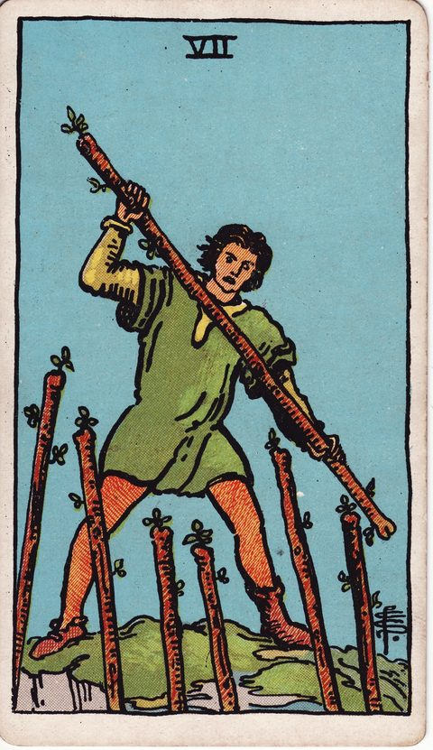

ワンドの7の意味
Seven of Wands

- 分類ワンド
- 象徴火／ワンド（情熱・行動）／数字7（試練・防衛）
- 正位置防衛・信念・踏ん張り
- 逆位置疲弊・押される・折れそう
ワンドの物語（情熱と行動） 第7章「見極めと試練」
描かれている象徴
崖の上に立つ人物が、下から突き出される6本の杖に対して、自分の杖で応戦しています。左右で違う靴を履いた姿は、慌ただしい防戦を思わせます。自分の立場と信念を守り抜く場面です。
正位置の意味
- 防衛
- 信念
- 踏ん張り
優位な立場を守るため、ぶれずに主張を貫く時です。
進めやすさ：3 / 5（条件しだい）
- 見落としていること
- 「守っている」つもりが、実は攻めのチャンスを逃していない？
- 進むときの注意点
- 防衛だけに徹すると、消耗して長続きしません。
- 本音（本当はどうしたい？）
- 何を守りたくて、何は譲ってもよいでしょうか。
- 手放してよいこと
- 「全部を守らなければ」という気負いは、降ろしてもよさそうです。
- 決め手になる違い
- 差がつくのは、自分の信念を曲げずに主張できるかどうかです。
逆位置の意味
- 疲弊
- 押される
- 折れそう
防御に疲れ、立場を守り続けるのが難しくなっています。
進めやすさ：2 / 5（いまは整える・見直すが先）
- 見落としていること
- 疲れがたまり、本来の判断力が落ちていませんか。
- 進むときの注意点
- 押されて焦ると、不利な条件をのんでしまいます。
- 本音（本当はどうしたい？）
- そもそも、その立場は本当に守りたいものでしょうか。
- 手放してよいこと
- 「一歩も引けない」というこだわりがなくても、あなたの信念は変わりません。
- 決め手になる違い
- 消耗せず、無理なく続けられる方が決め手です。
決断・迷いにおけるヒント
決断の場面での読み方
ワンドの7の人物は、崖の上で下から迫る杖を一本で受け止めています。左右で違う靴を履いているのは、準備が整う前に戦いが始まった慌ただしさの表れです。
決断の場面では、自分の立場を守る価値があるかを見極めることが鍵になります。譲れない一点が明確なら、高い位置にいる分だけ有利に戦えます。ただし全方位を防ごうとすると消耗します。
守るものを一つに絞り、残りは譲る判断も持っておきましょう。
よくある迷いとの向き合い方
反対意見の多い企画を進めるか、自分の方針を貫くか迷う場面に現れやすいカードです。逆位置なら、踏ん張りすぎて疲れ切っていないかを確認して。退くことは負けではなく、陣地を選び直す戦略的な判断であることもあります。
決断前に自分に問いかけたいこと
譲れない一点を、はっきり言葉にできるか。守る価値のある立場か、意地になっているだけか。全方位を守ろうとして消耗していないか。退くとしたら、どこまでなら受け入れられるか。
「進めやすさ」は、その選択肢を「いま進める」ときの追い風の強さ。運勢の良し悪しではない。
関連するカード
正位置の進めやすさが同じ（3 / 5）カード
このカードの視点で考えたい悩み
いまの迷いに近いテーマから、考え方と自分への問いかけを探せます。